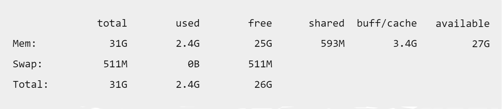

Du skal logge deg inn i VM og laste ned ssh... med å skrive
sudo apt install ssh -y
Etter du har lasta ned ssh... skal du finne ut ip-en til VM-en med å skrive
ip a
Etter det kan du opne eit program som heiter "putty" i Windows og skrive inn ip-en til VM-en så trykker du på "Open"
Når du er inni putty sin terminal må du først logge deg inn med brukarnamn og passord av VM-en. Etter du er logga inn skriver du:
sudo apt update
og deretter skriver du
sudo apt upgrade -y
Så laster du ned Java i VM-en med å skrive:
sudo apt install openjdk-17-jre-headless
Etter det laster du ned noko som heiter "screen" med å skrive:
sudo apt install screen
Når du har gjort alt det skal du laste ned Minecraft Server med å skrive
wget https://piston-data.mojang.com/v1/objects/f69c284232d7c7580bd89a5a4931c3581eae1378/server.jar
Så skriver du
mv server.jar minecraft_server_1.19.2.jar
Det gjor du for å bytte namnet på fila du nettopp lasta ned frå "server.jar" til "minecraft_server_1.19.2.jar"
For å køyre "screen" kan du skrive
screen
Så skriver du
free -g -h -t
Etter du har skrevet det får du opp noko som det her
Her kan du se kor mykje RAM VM-en har totalt og kor mykje ut av det er tilgjengeleg
Når du starter ein Minecraft Server veljar du kor mykje RAM den skal ha. Du burde gi Minecraft Serveren din minst 2GB med RAM og alt over det går fint.
java -Xms2G -Xmx2G -jar minecraft_server_1.19.2.jar nogui
-Xms2G over står for 2GB og om du vil ha meir RAM er det bare å bytte ut begge 2 talla med eit anna tall.
Du vil sikkert få ein melding som seier at du ikkje kan starte serveren, fordi du har endå ikkje akseptert eula vilkåra og det kan du gjere med å skrive
nano eula.txt
for å opne fila. I fila bytter du
"false" til "true", så trykker du på ctrl + x, så trykker
du på y og enter.
For
å bytte på minecraft server innstillinger kan du skrive:
nano server.properties
Og der kan du bytte innstillingar som ip, port, difficulty, gamemode osv. Ip-en må vere VM-sin ip (den du brukte i putty) (Default port for Minecraft Server er 25565) for å gå ut må du trykke ctrl + x, så trykker du y og enter.
Etter det, starter du serveren med å skrive:
java -Xms2G -Xmx2G -jar minecraft_server_1.19.2.jar nogui
Denne kommandoen startar serveren med 2GB RAM
Open Lunar Client og start Minecraft 1.19.2 gå inn på Multiplayer -> Add Server -> namnet er ikkje viktig og kan vere kva som helst. Adressen skal vere den du skreiv i minecraft.properties porten også.
Eksempel: 192.168.1.195:30001
(ip) (port)